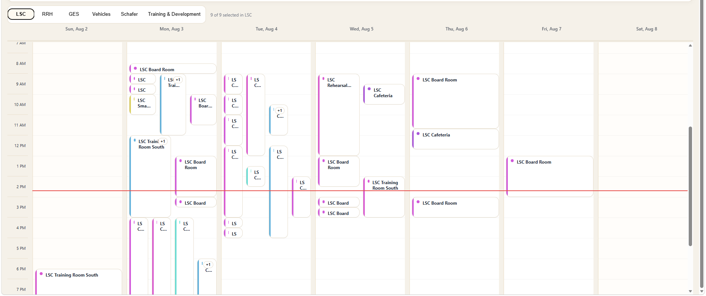

Visual evidence
The same operational data became much easier to read.
Choose a calendar area, then switch between the original and redesigned view. Names and email addresses in these public screenshots have been blurred.

ORIGINAL / LSC WEEKEvents were positioned mainly by time. When many bookings overlapped, cards became narrow, titles were clipped, and employees could not quickly see the requester or enough booking context.
Several operational calendars become one place employees can actually use.
The platform combines room bookings, vehicle bookings, department events, and company schedules across LSC, RRH, GES, Vehicles, Schafer, and Training & Development. Employees can move between month, week, day, agenda, and holiday views instead of opening separate calendars and comparing them manually.
I kept the familiar company brand, then rebuilt the views around the information people were missing.
The original version included month, week, and agenda views for all six calendar areas, but crowded time-based layouts hid important details. I designed a new day view, created a holiday view covering company holidays through 2027, and redesigned the week experience for each area so rooms, vehicles, and events could present the information their users needed.
The redesign also changed how the browser turns calendar data into useful decisions.
Exchange resource mailboxes and event calendars provide the source data. The Node service retrieves and normalizes events, applies date and mailbox filters, handles time-zone rules, and returns more fields from the API—including requester, time, purpose, and availability. The redesigned week and day views render event-based cards instead of relying only on narrow time-grid placement.
GET /api/calendar?start=&end=&mbox=
status = past | happening-now | upcoming | available
booking link = Microsoft Form + preselected vehicle
sort(today) = happening now → upcoming → earlierThe finished platform reduces the time between “What is available?” and “I know what to do next.”
Green identifies availability, blue identifies future bookings, orange identifies events happening now, grey identifies past events, and a red treatment marks the current day. Current events automatically appear ahead of future and past items. Requester and booking information is visible where useful, and clicking an available vehicle opens a shorter booking path with the vehicle already selected.
FASTER DECISIONS